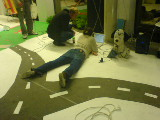
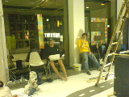

| <--- |  |
--->  |
tim im girl.tv/land
Belichtungszeit: 0.033 s (1/30)
Blendeneinstellung: f/2.8
ISO: 100
Blitz: No
Dateigrösse: 14927 bytes
Kamerahersteller: Sony Ericsson
Kameramodell: K750i
Aufnahmedatum: 11. September 2005 00:57:12
Auflösung: 160 x 120